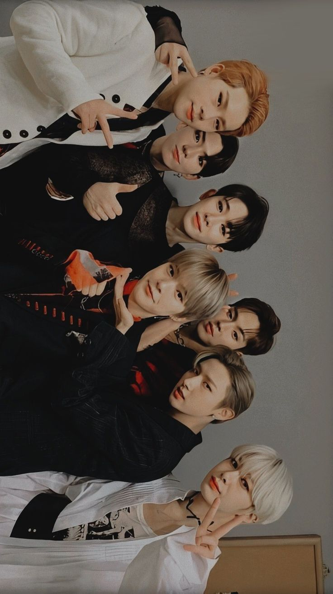
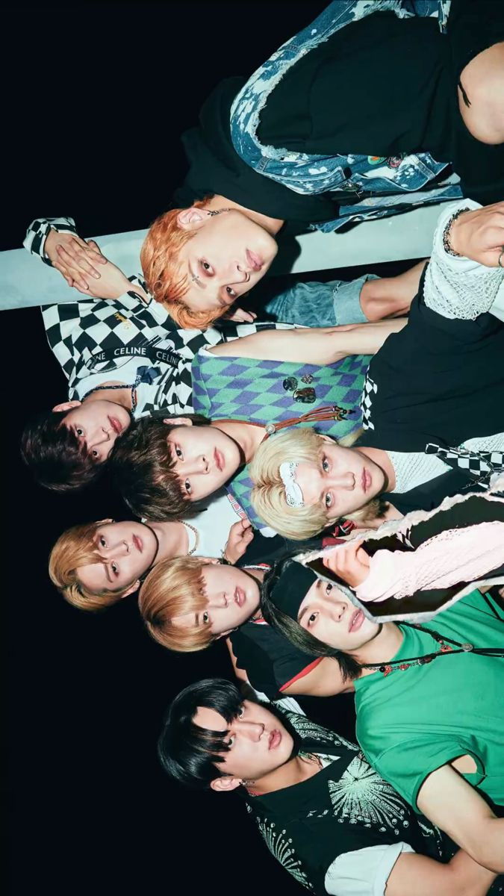

Exo es un grupo musical surcoreano-chino formado por SM Entertainment en 2011. Debutó en 2012
ATEEZ es una boy band de Corea del Sur formada por la agencia KQ Entertainment
Monsta X es una boy band surcoreana formada por la agencia Starship Entertainment en 2015 a través del programa No.Mercy.
Stray Kids es un grupo masculino surcoreano formado en 2017 por JYP Entertainment a través del reality show homónimo.
Enhypen, estilizado como ENHYPEN, es una boy band surcoreana de K-pop formada por Belift Lab, una empresa conjunta entre las compañías CJ E&M y HYBE.El grupo se organizó mediante el programa I-Land
NCT 127 es la segunda subunidad de la boy band surcoreana NCT, formado por el sello SM Entertainment en 2016. La subunidad basada en Seúl, debutó en julio de 2016 con el lanzamiento de su primer EP, NCT #127.